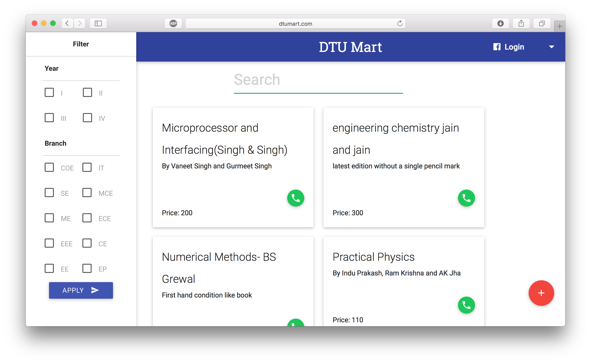
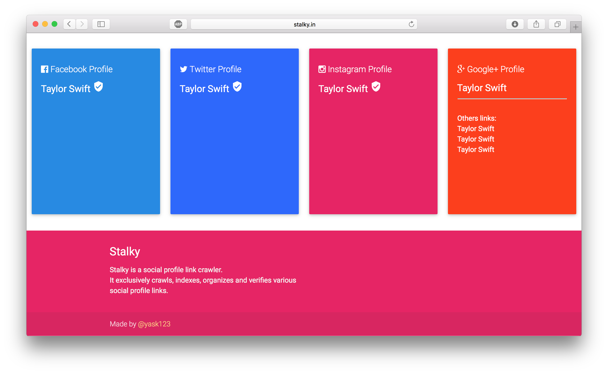
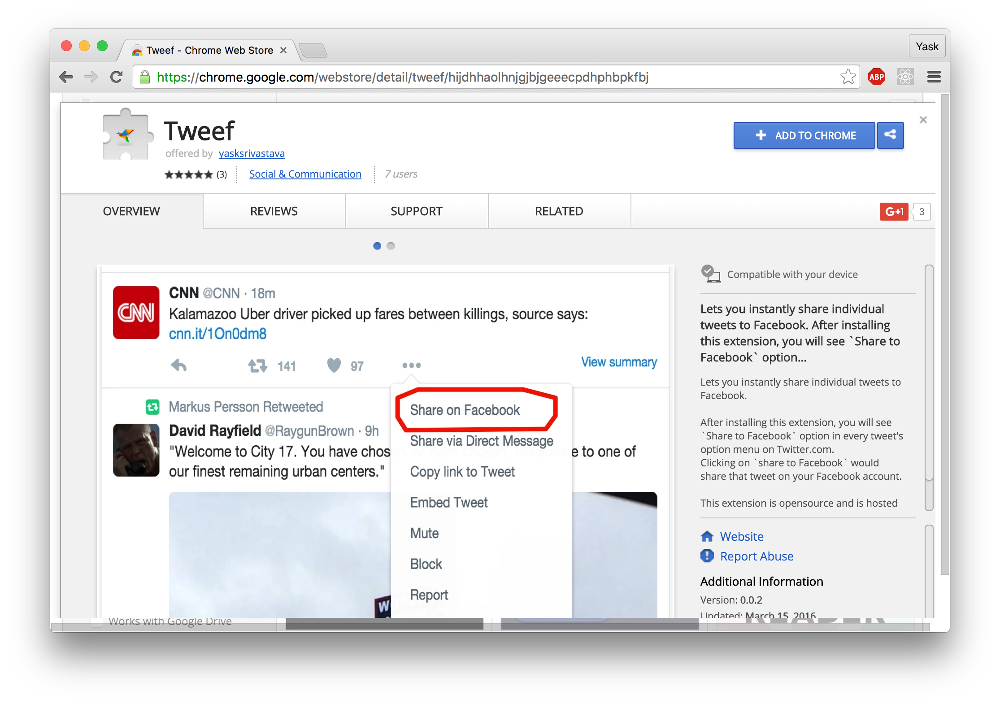
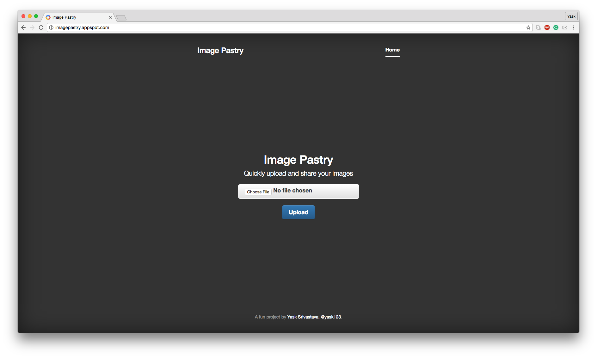

Hey! I am Yask Srivastava.
I am majoring in Information Technology from GGSIP University and will be graduating next year in August.
I have worked at a few places: Flipkart, Python Software Foundation (GSoC'15 and Zomato in software development related roles.
I love contributing to open source softwares. I have contributed to various organizations such as PSF, Mozilla and KDE. I represented PSF in FOSSASIA'16, Singapore (Asia's biggest open source conference).
I am also the creator and maintainer of a popular open source python library called InstantMusic. It currently has over 1000 stars on Github and is used by thousands of people.
I also like to work on interesting projects. Check out my work portfolio page to read more on that.
I can be reached at yask123 [at] gmail.com
Work
Flipkart
Software engineer intern : Summer'16
Worked with Flipkart's mobile web team on their progressive web app and built AMP (Accelerated Mobile Pages) for Flipkart mobile pages which improved first time loading performance by 4X.
Zomato
Trial Week intern : Winter'15
Worked with automation team to create a service which helps them in discovering new restaurants and their meta-data.
Student Developer, GSoC’15 : Summer'15
Worked for Python Software Foundation on MoinMoinWiki project, which is a high-performance wiki and created a well structured, consistent, good looking and well usable UI/UX for moin2
Projects
I started working on projects in the summer of 2013. You can check out my open source projects on Github. Here are some of the best ones:
InstantMusic

InstantMusic is a python library which instantly lets you discover and download music without knowing the exact title/artist of the song.
This project trended at #1 spot on HackerNews for the whole day and was featured in Top Trending Python Repositories in Github.
The repository currently has ~1000 stars and ~100 forks. 19 developers have contributed to this module since I started it.
JEEQuery

JEEQuery is a full-fledged QnA Django web app, similar to Stackoverflow, exclusively for students preparing for IIT-JEE exams. It was made to help students discuss question and answers with other IIT-JEE aspirants.
The app includes:
- Facebook login authentication
- College/ School students groupings
- Upvoting question/answer, flagging inappropriate submission
- User reputation, based on the quality of Question asked or Answers submitted.
- Questions tagging
- User profile
JEEQuery currently has 120 registered users .
DTUmart & BVPmart

DTUmart is a Django web app that enables students in the same college to buy/sell study materials with each other.
The first version of this app was written by me in 2014 and was called BVPmart, as it was for BVCOE students only. Later after success for BVPmart, I worked with my brother Bhirgu Srivastava to create a similar app for his college - Delhi Technological University students, and it was named DTUmart.
Features:
- Facebook login authentication
- A user can submit an advertisement of the study material he wants to sell. Additional information such as product description, price and phone number must be provided.
- A user who wants to purchase an item, can explore Ads categorically (Semester wise) or perform searches. With each product ad, the contact number of the seller is mentioned. The buyer can thus directly contact the seller and make exchanges in the college itself.
DTUmart has received over ~200 Advertisements posts in just 2 months.
Stalky

Stalky is a Django web app that instantly lets you discover all social profiles of popular celebrities.

It is powered by a simple web crawler which searches for social profile links, indexes them and tries to verify the accounts using official Facebook/Google APIs.
This app trended at #1 spot on subreddit /r/UsefulWebsites
Tweef

Tweef is a chrome extension which adds a "Share on Facebook" button on every tweet in Twitter.com. This enables users to instantly share an individual tweet on Facebook.
Image Pastry

Image Pastry is web app that lets you instantly share images.
It generates a unique URL for your image which can be shared with anyone.
Other Projects
To explore more projects of mine, please check out my github repository.